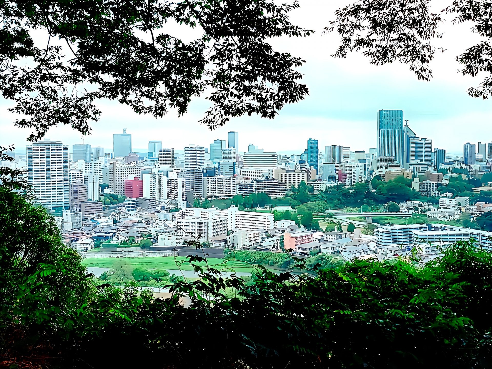

仙台行政書士鈴木事務所
仙台行政書士鈴木事務所
仙台行政書士鈴木事務所
仙台行政書士鈴木事務所
IT導入や補助金活用はあくまで手段です。MBA（CEO/CIO経験）× ITシステム開発×行政書士の複合知識で、目的である経営課題の解決まで「中の人」として伴走します。
相談して課題を整理するABOUT US

経営学修士（MBA）を取得し、東証プライム企業の子会社経営やシステム開発発ど事業の現場で豊富な経験を積んできました。 社外CIO（最高情報責任者）としてIT戦略の策定にも携わっています。 外部のコンサルタントではなく、「中の人」として貴社のチームに入り込み、 IT戦略の立案から補助金申請、システム導入、運用定着まで一貫して伴走します。
行政書士としての法務知識と、経営（CEO/CIO）ITシステム開発実務経験を組み合わせ、 中小企業・個人事業主様のビジネス成長を総合的に支援いたします。
当事務所は仲介業者ではありません。ご依頼いただいた案件は、資格を持つ代表の鈴木本人が、初回のご相談から書類のお渡しや実行支援まで対応します。
一方で、全国に多数の拠点を持つ大手ネットワークでの対応や、複数の事務所から一括で見積りを取って比較したいというご希望には、他のサービスの方が向いている場合もあります。当事務所は兼業のため受任件数を絞っており、一件一件丁寧に対応することを大切にしています。
経験豊富な専門家がお客様をサポート

社会人になってから経営学修士（MBA）を取得し、東証プライム企業子会社の代表取締役（CEO）として経営の最前線に立ってきました。また、他社の社外CIO（最高情報責任者）として、IT戦略の策定や自らシステム開発にも携わる中、事業承継の重要性を強く感じ、行政書士として終活や事業承継のサポートに取り組んでいます。行政書士業務は兼業で行なっており、一件一件を丁寧にご対応するため業務数を制限しながら取り組んでいます。「お客様の立場に立ち、安心できるサポート」をモットーに、人生の大切な節目を支えるお手伝いをいたします。
SERVICE
MBAの知見を活かした事業計画づくりから、申請書類の作成・提出まで一貫サポート。行政書士として代理申請にも対応します。
システムの専門家としての知見を活かし、ツール選定・要件整理から、登録IT導入支援事業者との連携までをサポート（申請は制度上、登録事業者との共同手続きが必要です）。導入して終わりではなく、運用定着や本来の業務課題解決まで伴走します。
月次顧問として貴社の「中の人」となり、IT戦略の立案から実行まで伴走。経営視点でIT活用を最大化します。
Google広告・Meta広告・LINE広告など各種デジタル広告の設計・運用・改善を支援。補助金活用による低コスト導入も可能です。
現状の業務を可視化し、ITで解決できるボトルネックを特定。改善計画の立案から実行支援まで一括して対応します。
会計ソフト・CRM・在庫管理・勤怠管理など、貴社の業務に最適なツールを比較・選定。ベンダー交渉も支援します。
デジタル変革の全体設計から社内定着まで。補助金を組み合わせながら、段階的なDX推進を支援します。
INFORMATION
締切日・補助率・上限額などの詳細は、公募要領が年度ごとに変わるため、必ず公式サイトでご確認ください。当事務所では最新の制度有無・リンク切れのみを定期的に確認しています。
POINT
外注先ではなく、貴社のチームの一員として内側からサポート。 経営課題を深く理解し、最適なIT活用を一緒に考え、実行まで伴走します。 外部コンサルにありがちな「報告書だけ」で終わることはありません。
小規模事業者持続化補助金などを活用することで、販路開拓・業務効率化にかかる費用を抑えながらIT投資を進められます。 コンサルタントとして論理的な戦略の作成と行政書士として補助金申請を進めます。 必要に応じてシステム開発も行います。
経営学修士の経営視点、IT実務の技術知識、行政書士の法務スキル。 この3つを掛け合わせることで、他にはない総合的な支援を提供します。 東証プライム子会社運営の実務経験が、机上の空論ではないリアルな提案を可能にします。
FLOW
現状の課題をヒアリングし、IT活用や補助金の可能性をご説明します。
業務フローを可視化し、IT導入効果を試算。最適なプランをご提案します。
申請書類の作成から採択まで、行政書士として責任を持って支援します。
ベンダー選定からシステム導入、社内展開まで伴走してサポートします。
導入後の効果を測定し、継続的な改善をPDCAサイクルで支援します。